ODE Solvers |
To solve an ODE directly without creating a solve block, use one of the ODE solvers, which solve systems of ODEs of the form
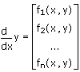
where y is vector of unknown functions of the independent variable x. To solve a higher-order ODE, rewrite it as a system of first order ODEs.
The ODE solvers are divided into two types: solvers for stiff systems and solvers for non-stiff systems. A system of ODEs written in matrix form as y = Ax, is called stiff if the matrix A is nearly singular. Otherwise, the system is non-stiff.
| Solvers for Non-Stiff Systems |
Adams(init, x1, x2, npoints, D, [tol]) Uses Adams methods.
rkfixed(init, x1, x2, npoints, D) Uses the fourth-order Runge-Kutta fixed-step method.
Rkadapt(init, x1, x2, npoints, D) Uses the fourth-order Runge-Kutta with adaptive step-size.
Bulstoer(init, x1, x2, npoints, D) Uses the Bulirsch-Stoer method, which is slightly more accurate than Runge-Kutta, but requires a smoothly varying system.
| Solvers for Stiff Systems |
BDF(init, x1, x2, npoints, D, [J], [tol]) Uses backward differentiation formula methods. You can use either of the optional arguments J or tol and omit the other.
Radau(init, x1, x2, npoints, D, [J], [M], [tol]) Uses the Radau5 method. You can use any combination of the optional arguments J, M, and tol and omit the options you do not wish to use.
Stiffb(init, x1, x2, npoints, D, AJ) Uses the Bulirsch-Stoer method.
Stiffr(init, x1, x2, npoints, D, AJ) Uses Rosenbrock method.
| Hybrid Solver |
AdamsBDF(init, x1, x2, npoints, D, [J], [tol]) Determines whether a system is stiff or non-stiff and calls Adams or BDF accordingly. You can use either of the optional arguments J or tol and omit the other.
Note: AdamsBDF is the default solver for Odesolve.
Each of these functions returns an (npoints + 1) × (n + 1) solution matrix, where n is the number of unknowns. The first column of the matrix contains the values of x at which the solutions are evaluated. These values are npoints + 1 evenly spaced numbers between x1 and x2. The remaining columns contain the values of the solutions y0, y1, ..., yn - 1 corresponding to the values of x in the first column.
D is a vector function of the form D(x,y) specifying the right-hand side of the system.
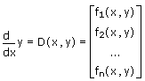
tol is an optional real value, or a vector of real values, specifying tolerances for each independent variable in the system. The tolerance is the required accuracy for a solution variable. Set tol to be less than or equal to 10-5. The smaller the value of tol, the more steps the solver algorithm performs to achieve the required accuracy.
If you are solving a system of equations, setting tol to be a scalar specifies the same tolerance for all variables in the system. Setting tol to be a vector, whose length equals the numbers of variables in the system, specifies individual tolerances for each of the variables.
Note: tol is not available when using odesolve with a solve block.
J is a function of the form J(x,y) that returns the Jacobian matrix - the matrix of partial derivatives of the functions in D with respect to y0, y1, ... yn-1. See Computing the Jacobian Matrix.
AJ is a function of the form AJ(x,y) that returns the augmented Jacobian, whose first column contains the partial derivatives, with respect to x, of the functions on the right-hand side of the system. The remaining columns are the columns of the Jacobian J, containing the partial derivatives with respect to y0, y1, ... yn-1, as described above. See Computing the Jacobian Matrix.
Note: For the solvers rkfixed, RkAdapt, Bulstoer, Stiffb, and Stiffr, you can specify a scalar tolerance for the solution by defining the variable TOL before calling the solver. For example,
TOL:= 10-6
sets the tolerance for all variables as 10-6.
Note that TOL does not affect the tolerances for the solvers Adams, BDF, or Radau. For these solvers, you must use the optional argument tol, described above, to specify tolerances.
| Rewriting a Higher-Order ODE as a System of First-Order ODEs |
To rewrite the nth-order ODE
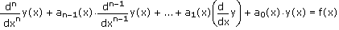
as a system of first-order ODEs, define variables y0, y1, ... yn as follows:
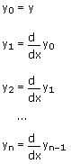
In terms of the new variables, the original equation becomes
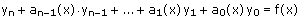
This is equivalent to the following system of first-order ODEs:
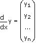 where 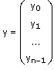
If you solve the original equation for yn and substitute the result in the vector, you get a vector function that you can apply the ODE solvers to:
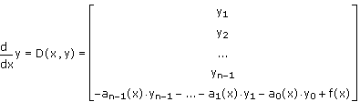
For example, you can rewrite the second-order ODE
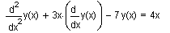
using vector subscripts, as
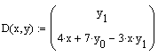 with implied left-hand-side 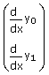
| Computing the Jacobian Matrix |
You can compute the Jacobian matrix, used by the solvers BDF and Radau using the function Jacob. For the preceding example, the Jacobian matrix J is
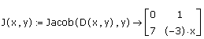
To compute the augmented Jacobian, used by the solvers Stiffb and Stiffr, start by computing the first column of the matrix, using the function Jacob, as follows:
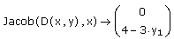
Then concatenate this column with the matrix J, using the augment function, as follows:
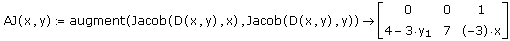